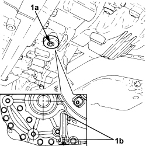

0010T45 AUTOMATIC TRANSMISSION FLUID CHECK LEVEL AND TOP UP IF NECESSARY
- Path
- Procedures > 00 MAINTENANCE > 0010 NEW VEHICLES AND MAINTENANCE > 0010T VEHICLE FLUIDS > 0010T45 AUTOMATIC TRANSMISSION FLUID CHECK LEVEL AND TOP UP IF NECESSARY
- Kind
- repair procedure (removal / refitting; the operation number is the code)
- Applies to
- engines: 3.2 JTS; all production periods
- Interactive page
- https://sloeber94.github.io/elrnDB-aBrrSpdr/en/#/946004258
Applies to: engines: 3.2 JTS; all production periods
- Position the vehicle on a lift.
- With the coolant cold, start the engine and move the speed selector twice from position "P" to position "D" and viceversa with the brake pedal depressed. Maintain the selector in each position for 2 seconds.
- Adjust the transmission fluid temperature between 80-85°C, connecting the Examiner, to allow the automatic transmission fluid cooling circuit thermostat valve to open, then stabilise at a temperature of 35-45°C.
Op. 7055B54 UNDER ENGINE PROTECTION/GUARD - R.R.
1. Remove the automatic transmission fluid level check plug (1a) and check that fluid emerges from the drain plug hole (1b).

Applies to: engines: 3.2 JTS; all production periods
- If no fluid emerges, proceed as follows.
- Retighten the automatic transmission fluid level check plug.
Applies to: engines: 3.2 JTS; all production periods
1. Remove the automatic transmission fluid filler plug.
- Add 0.5 litres of the specified fluid to the filler opening.
Component | Type | Description | Classification | Qty. | Validity |
|---|---|---|---|---|---|
Automatic transmission (6 speed) - for changing oil during SERVICE | Oil [kg] | TUTELA GI/VI | - | 3.320 | 3.2 JTS CAE |

Applies to: engines: 3.2 JTS; all production periods
- With the brake pedal depressed, move the gear selector twice from position "P" to position "D" and viceversa, maintaining the selector in each position for 2 seconds.
- Set the selector to "P" and operate the parking brake (it is advisable to use chocks to lock the wheels).
- Remove the automatic transmission fluid level check plug and check that fluid emerges from the drain plug hole.
- If no fluid emerges, repeat the above operations.
- Clean oil traces from the drain hole area and tighten the automatic transmission fluid level check plug to the specified torque.
Component | Fastening | dia | Value (daNm) | Validity |
|---|---|---|---|---|
Automatic transmission fluid level check plug | - | - | 0.6 ÷ 0.8 | 3.2 JTS CAE |
- Tighten the automatic transmission fluid drain plug to the recommended torque.
Component | Fastening | dia | Value (daNm) | Validity |
|---|---|---|---|---|
Automatic transmission fluid supply plug | - | - | 2.4 ÷ 3.6 | 3.2 JTS CAE |